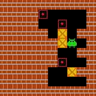

Sokoban¶
概述¶
Sokoban 是一种离散动作空间环境。在该游戏中，智能体需要在离散动作集合中选择动作，目标是将房间中所有的箱子推到指定位置。这里的 Sokoban 环境实现了房间的随机生成，避免深度神经网络因为预定义的房间而训练过拟合。
{kind=link}
安装¶
安装方法¶
用户可以选择通过 pip 一键安装或 git clone 代码库后 pip 本地安装
注：如果用户没有 root 权限，请在 install 命令后加上 --user
# Method1: Install Directly
pip install gym-sokoban
# Method2: Install from source code
git clone git@github.com:mpSchrader/gym-sokoban.git
cd gym-sokoban
pip install -e .
验证安装¶
安装完成后，运行如下 Python 程序，如果没有报错则证明安装成功。
import gym
import gym_sokoban
env = gym.make('Sokoban-v0')
obs = env.reset()
print(obs.shape) # (160, 160, 3)
变换前的空间（原始环境）¶
观察空间¶
实际的游戏画面，RGB 三通道图片，具体尺寸为
(160, 160, 3)(以 Sokoban-v0 为例)，数据类型为uint8每个房间中包含五种主要元素：墙壁，地板，箱子，目标点，和玩家，在游戏画面中以不同颜色标识。当箱子和玩家与目标点重合时，颜色也会发生变化。
动作空间¶
游戏提供了 9 种环境交互动作，形成大小为 9 的离散动作空间，数据类型为
int，需要传入 python 数值（或是 0 维 np 数组，例如动作 3 为np.array(3)）。动作在 0-8 中取值，具体的含义是：0：No Operation
1：Push Up
2：Push Down
3：Push Left
4：Push Right
5：Move Up
6：Move Down
7：Move Left
8：Move Right
其中 Move 表示仅移动，需要对应方向上的下一个格子没有箱子或墙。
Push 表示移动相邻的箱子，需要箱子的下一格是空闲的，不能直接推动两个相邻的箱子。如果对应方向上的相邻格子没有箱子，则 Push 和 Move 效果一致。
奖励空间¶
游戏得分，一般是一个
float数值，具体的数值如下：行动一步：-0.1
将箱子推到目标点上：1.0
将箱子推离目标点：-1.0
将所有箱子推到目标点上：10.0
终止条件¶
所有箱子都推到目标点上，或者行动步数到达最大步数 max_step ，则当前环境 episode 结束。默认 max_step 为 120 步，可在 config 中调节。
内置环境¶
Sokoban 内置了 9 个环境，分别为
Sokoban-v0,Sokoban-v1，Sokoban-v2，Sokoban-small-v0，Sokoban-small-v1，Sokoban-large-v0，Sokoban-large-v1，Sokoban-large-v2，Sokoban-huge-v0。环境仅有房间大小和箱子数量差异，房间内部环境均为随机生成。例如
Sokoban-v0即为房间大小为 10×10，房间里有 3 个箱子。每次 reset 后，会根据房间大小和箱子数量随机生成环境。由于随机生成过程中，箱子首先生成在目标点上，然后经过反向移动到达起始点，因此所有环境都有解。
关键事实¶
稀疏奖励环境，仅在箱子推到目标点时能获得正奖励。奖励取值范围较小，最大值为 10+N ， N 为箱子数量。最小值为 -max_step 。
离散动作空间
其他¶
惰性初始化¶
为了便于支持环境向量化等并行操作，环境实例一般实现惰性初始化，即__init__方法不初始化真正的原始环境实例，只是设置相关参数和配置值，在第一次调用reset方法时初始化具体的原始环境实例。
随机种子¶
环境中有两部分随机种子需要设置，一是原始环境的随机种子，二是各种环境变换使用到的随机库的随机种子（例如
random，np.random）对于环境调用者，只需通过环境的
seed方法进行设置这两个种子，无需关心具体实现细节环境内部的具体实现：对于原始环境的种子，在调用环境的
reset方法内部，具体的原始环境reset之前设置环境内部的具体实现：对于随机库种子，则在环境的
seed方法中直接设置该值
存储录像¶
在环境创建之后，重置之前，调用enable_save_replay方法，指定游戏录像保存的路径。环境会在每个 episode 结束之后自动保存本局的录像文件。（默认调用gym.wrappers.RecordVideo实现 ），下面所示的代码将运行一个环境 episode，并将这个 episode 的结果保存在./video/中：
from easydict import EasyDict
from dizoo.sokoban.envs.sokoban_env import SokobanEnv
env = SokobanEnv(EasyDict({'env_id': 'Sokoban-v0', 'is_train': False}))
env.enable_save_replay('./video')
obs = env.reset()
while True:
action = env.action_space.sample()
timestep = env.step(action)
if timestep.done:
print('Episode is over, final eval reward is: {}'.format(timestep.info['final_eval_reward']))
break